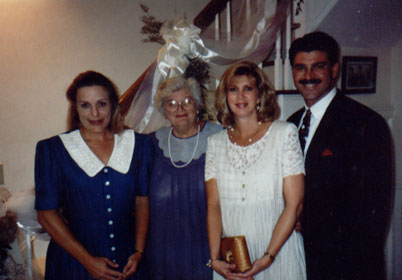

|
|
Brett Fortune was born in Baltimore, MD on March 17th, 1960. He had an older brother, Jay. Brett grew up Bel Air, MD, living next door to his aunt and uncle and three cousins. |
| He married Helen Anne Neilander on June 23, 1984. He graduated from Stetson University with a BBA in 1982. They made a home in Alparetta, GA and there had four children. Brett worked as a project manager for the Calibre Company for 8 years before starting his own contracting firm, Fortune-Johnson, Inc. |
 |